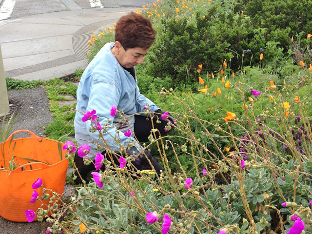
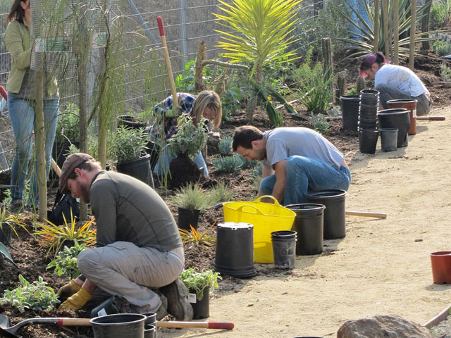
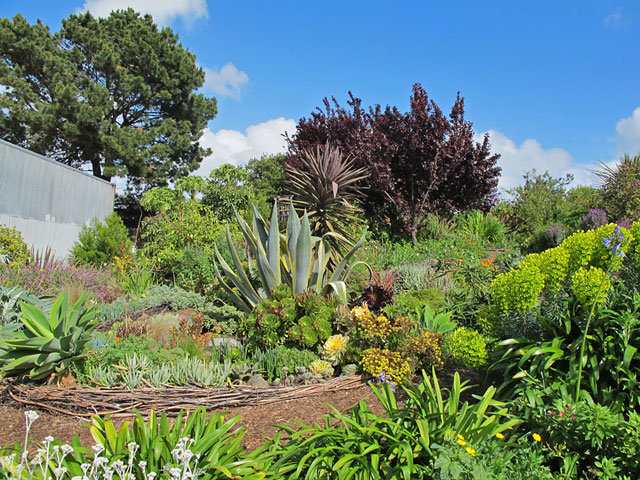
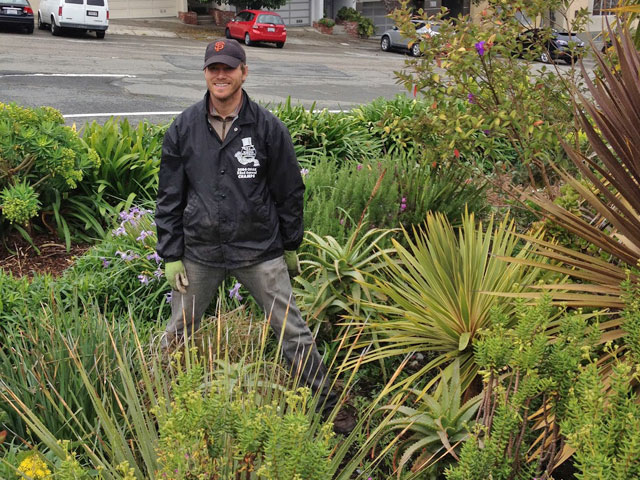

The San Francisco Plant Finder is a resource for gardeners, designers, ecologists and anyone who is interested in greening neighborhoods, enhancing our urban ecology and surviving the drought. The Plant Finder recommends appropriate habitat-building plants for sidewalks, gardens and roofs that are adapted to San Francisco's unique environment and climate.
This tool was developed as part of the Green Connections project and provides a centralized location to learn about plants and trees recommended by City agencies and local ecology experts. The tool includes links to the Green Connections Ecology Guides – route-specific recommendations to support target species and habitat along the 24 Green Connection routes.
The Plant Finder emphasizes selecting plants to provide habitat for local wildlife and to help restore local biodiversity. The plants in the database include California natives and Mediterranean climate exotics. A large subset of the California natives are actually local San Francisco natives. We strongly recommend local natives since they provide the best habitat for local pollinators and other wildlife with whom they have co-evolved. San Francisco natives are the most closely adapted to the climate and environment of the San Francisco peninsula of course, and so they are the best in terms of water and soil conservation, ecosystem health, and overall sustainability.
By planting a habitat garden of San Francisco native plants, you can promote landscape continuity, pride and sense of place, respect and awareness of the city's natural heritage, and climate and community resilience.
We have tried to provide as specific information as possible. The data and information presented on this site were obtained from many different sources, and some of the fields are based on general estimates (e.g., watering needs). Due to the high variation of species, specific site selection and conditions are important to consider when planting your habitat garden.
Download the Data Set
The entire SF Plant Finder data set can be downloaded for free from DataSF under a Creative Commons license.
Questions or Feedback
For questions related to content on SF Plant Finder please contact biodiversity@sfenvironment.org at the Department of the Environment.
For questions about using this website, technical feedback or suggestions to improve this site please click here